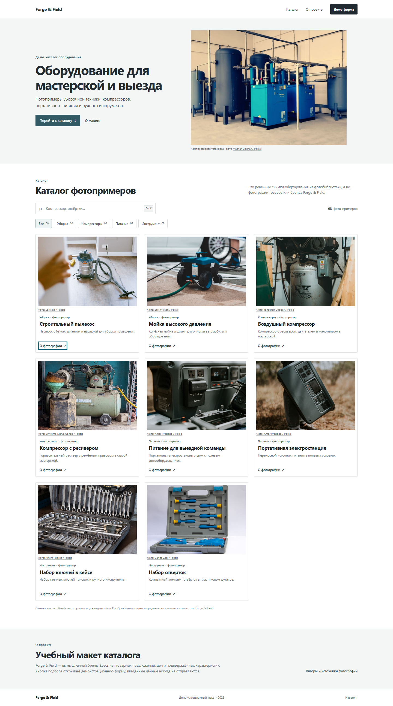
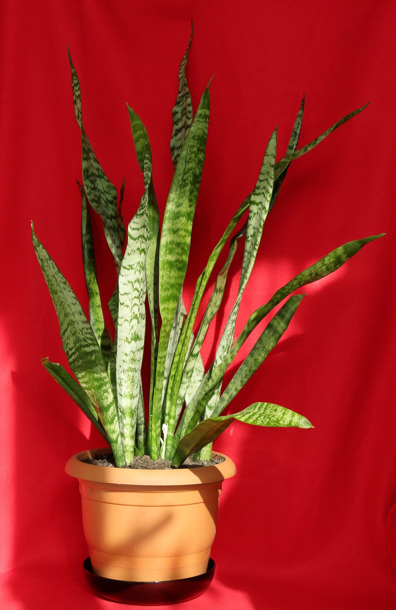
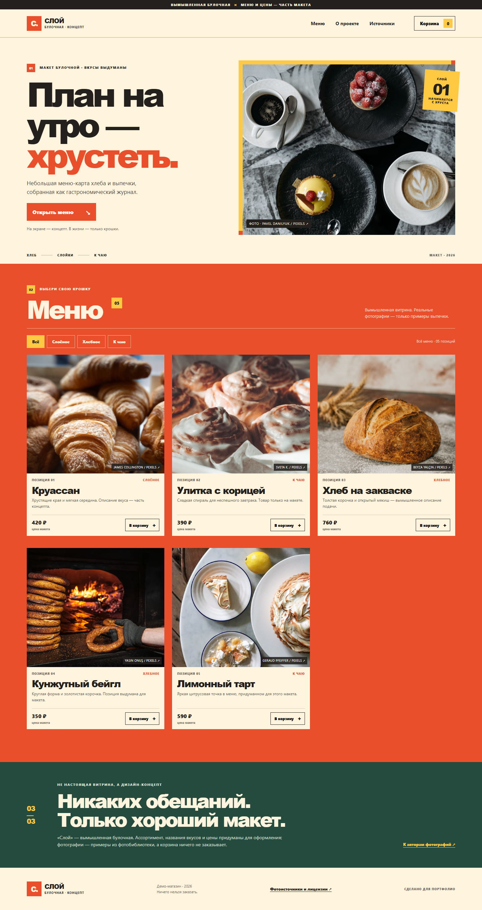
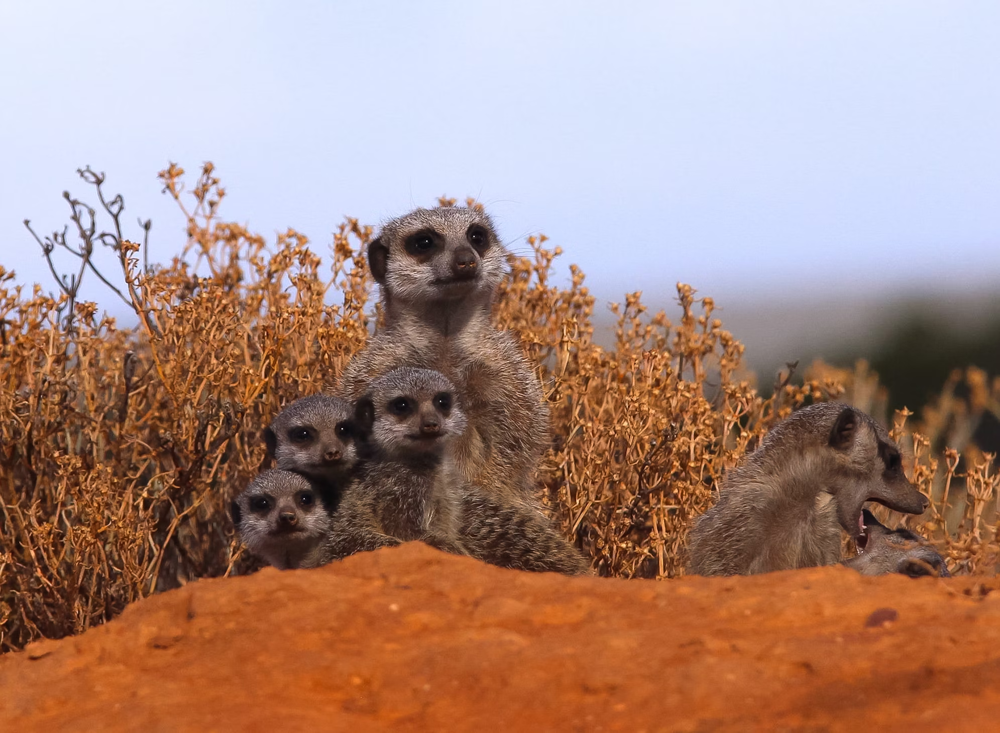

E-COMMERCE CONCEPT↗Forge & Field
↗Каталог оборудования для мастерской и выездных команд. Поиск, категории, карточки товара и форма запроса.
ПОРТФОЛИО · WEB & DIGITAL
Подборка интерфейсов и цифровых концептов: от учебной платформы до продуктовых сайтов и финансового лендинга.
Смотреть проекты ↓
E-COMMERCE CONCEPT↗Каталог оборудования для мастерской и выездных команд. Поиск, категории, карточки товара и форма запроса.

BOTANICAL JOURNAL↗Экспериментальный ботанический журнал с подбором растений по освещению.

FOOD / BRAND↗Сайт-карточка городской пекарни: тёплая редакционная подача и аппетитная витрина.
Учебный MVP по Python: уроки, интерактивные упражнения, подсказки и сохранение прогресса.
 FINANCE / LANDING CONCEPT↗DESKTOP CONCEPT
FINANCE / LANDING CONCEPT↗DESKTOP CONCEPTКонцепт сайта для финансового сервиса. Есть отдельный вариант для мобильного экрана.
Банковский концепт с античной визуальной системой, разделами кредита и инвестиций.
Витрина с каталогом и корзиной. Для загрузки товаров нужен локальный Node.js-сервер.

WHH↗Сайт проекта помощи животным: программы защиты природы, результаты работы и форма подписки.
Адаптивный промо-сайт плеера с альбомными страницами, избранным, поиском и демо-контролами.
ПОДХОД
В подборке собраны каталоги, бренд-сайты, финансовые концепты, учебные интерфейсы и небольшие веб-приложения из разных папок.
Вернуться к работам ↑